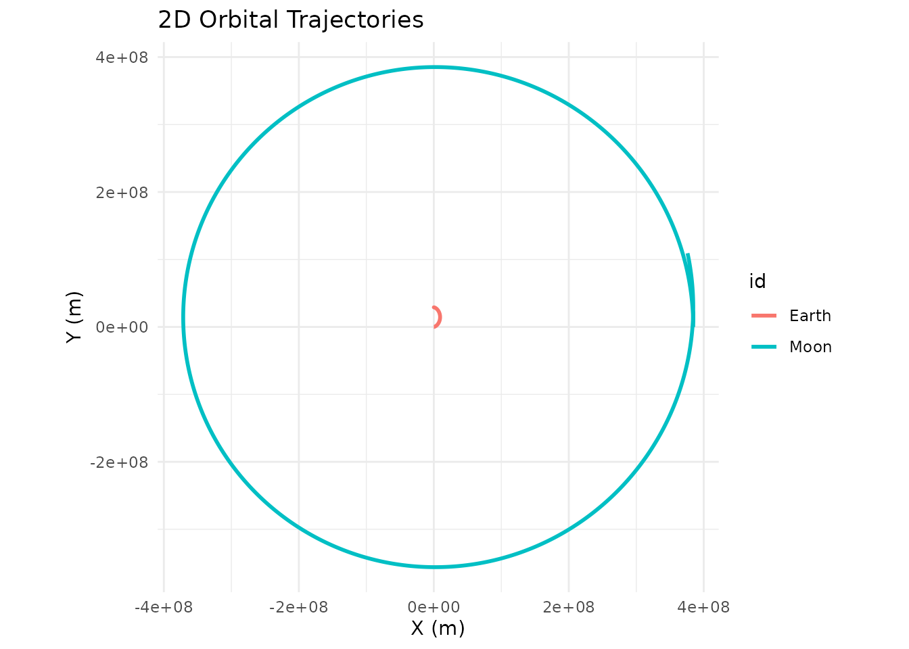
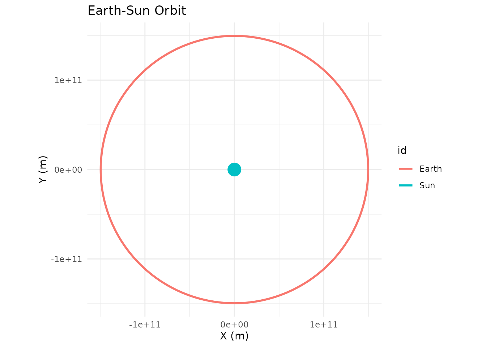
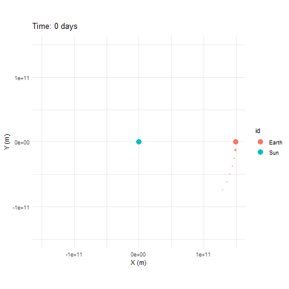
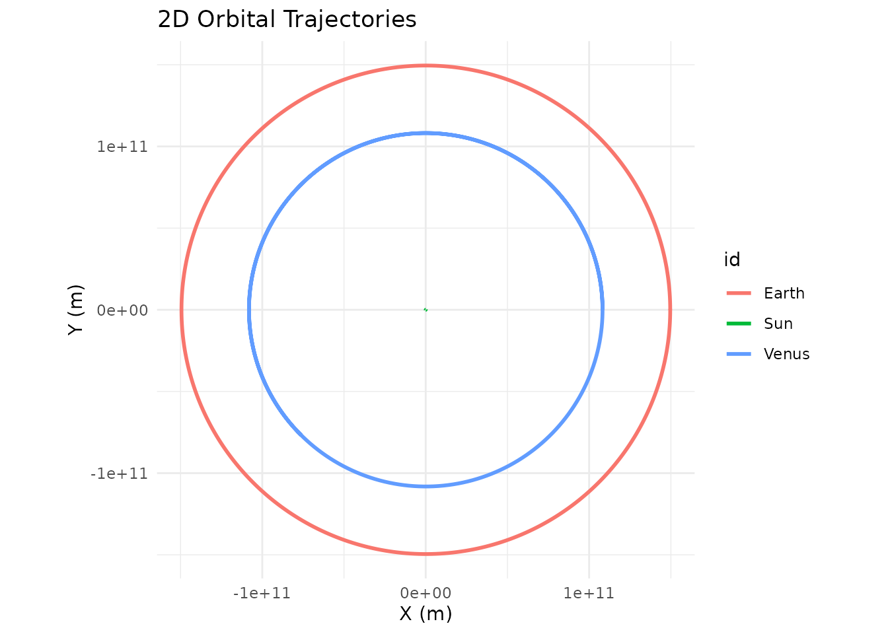

Installation
# install.packages("devtools")
devtools::install_github("daverosenman/orbitr")For 3D interactive plotting, you’ll also want:
install.packages("plotly")Your First Simulation in 30 Seconds
orbitr is designed around a simple pipe-friendly
workflow: create a system, add bodies, simulate, and plot.
library(orbitr)
create_system() |>
add_body("Earth", mass = mass_earth) |>
add_body("Moon", mass = mass_moon, x = distance_earth_moon, vy = speed_moon) |>
simulate_system(time_step = 3600, duration = 86400 * 28) |>
plot_orbits()
That’s it — a 28-day lunar orbit in four lines. Here’s what each step does:
-
create_system()initializes an empty simulation with standard gravitational constant G. -
add_body()places a body with a given mass, position, and velocity. All positions are in meters, velocities in m/s. The built-in constants (mass_earth,distance_earth_moon, etc.) save you from looking anything up. -
simulate_system()runs the N-body integration forward in time.time_stepis how many seconds per integration step,durationis the total time to simulate. -
plot_orbits()produces a quick 2D trajectory plot usingggplot2.
Customizing the Plot
By default, plot_orbits() returns a standard
ggplot object for planar (2D) simulations and a
plotly HTML widget for simulations with any 3D motion. (You
can also force 3D rendering on planar data with
three_d = TRUE.) Because the 2D case returns a regular
ggplot, you can layer additional geoms, scales, themes, and labels onto
it with + like any other ggplot.
A common annoyance is that the central body in a two-body system can
be invisible: plot_orbits() draws each body as a
geom_path() of its trajectory, and a much more massive body
barely moves so its path is too small to see. The Sun in a Sun-Earth
simulation is the classic example — it’s there, but its loop around the
barycenter is well inside the Sun itself. The simplest fix is to drop a
marker at the origin:
sim <- create_system() |>
add_body("Sun", mass = mass_sun) |>
add_body("Earth", mass = mass_earth, x = distance_earth_sun, vy = speed_earth) |>
simulate_system(time_step = 86400, duration = 86400 * 365)
sim |>
plot_orbits() +
ggplot2::geom_point(
data = data.frame(x = 0, y = 0),
ggplot2::aes(x = x, y = y),
color = "gold",
size = 6
) +
ggplot2::labs(title = "Earth-Sun Orbit")
This works because the Sun sits essentially at the origin throughout
the simulation. For systems where the central body actually moves a
noticeable amount, you’d want to pull its position from the simulation
tibble instead of hardcoding (0, 0).
Watching the Orbit in Motion
Static plots are nice, but you can also play the simulation forward
as an animation with animate_system(). By default each body
leaves a fading wake of recent positions behind it:
animate_system(sim, fps = 15, duration = 5)
animate_system() is the animated counterpart to
plot_system() — it samples the simulation tibble down to
roughly fps * duration evenly spaced frames, then renders
them as a GIF using gganimate. Like the static plotters, it
auto-dispatches to a 3D version (animate_system_3d(), an
interactive plotly widget with a play button) the moment
any body has non-zero Z motion. The 2D path requires the
gganimate and gifski packages — install them
with install.packages(c("gganimate", "gifski")).
Adding More Bodies
Since orbitr is a full N-body engine, you can add as
many bodies as you want. Each one gravitationally interacts with every
other. Here’s the Sun with both Earth and Venus for a full year:
create_system() |>
add_body("Sun", mass = mass_sun) |>
add_body("Earth", mass = mass_earth, x = distance_earth_sun, vy = speed_earth) |>
add_body("Venus", mass = mass_venus, x = distance_venus_sun, vy = speed_venus) |>
simulate_system(time_step = 86400, duration = 86400 * 365) |>
plot_orbits()
Venus completes more than one full orbit in the same time Earth takes to go around once — you can see the inner orbit is both smaller and faster.
The Output is Just a Tibble
simulate_system() returns a standard tidy tibble. You
can use dplyr, ggplot2, plotly,
or any other tool on it:
sim <- create_system() |>
add_body("Earth", mass = mass_earth) |>
add_body("Moon", mass = mass_moon, x = distance_earth_moon, vy = speed_moon) |>
simulate_system(time_step = 3600, duration = 86400 * 28)
sim
#> # A tibble: 1,346 × 9
#> id mass x y z vx vy vz time
#> <chr> <dbl> <dbl> <dbl> <dbl> <dbl> <dbl> <dbl> <dbl>
#> 1 Earth 5.97e24 0 0 0 0 0 0 0
#> 2 Moon 7.34e22 384400000 0 0 0 1022 0 0
#> 3 Earth 5.97e24 215. 0 0 0.119 0.000571 0 3600
#> 4 Moon 7.34e22 384382520. 3679200 0 -9.71 1022. 0 3600
#> 5 Earth 5.97e24 860. 4.11 0 0.239 0.00229 0 7200
#> 6 Moon 7.34e22 384330083. 7358065. 0 -19.4 1022. 0 7200
#> 7 Earth 5.97e24 1934. 16.5 0 0.358 0.00514 0 10800
#> 8 Moon 7.34e22 384242692. 11036262. 0 -29.1 1022. 0 10800
#> 9 Earth 5.97e24 3438. 41.1 0 0.477 0.00914 0 14400
#> 10 Moon 7.34e22 384120357. 14713454. 0 -38.8 1021. 0 14400
#> # ℹ 1,336 more rowsEach row is one body at one point in time, with columns for position
(x, y, z), velocity
(vx, vy, vz), mass, body ID, and
time.
Next Steps
- The Physics — Understand the math behind the simulation
- Examples — More complex systems including binary stars and the Kepler-16 system
- Unstable Orbits — Why most random configurations are chaotic
- 3D Plotting — Interactive 3D visualization with plotly
- Custom Visualization — Build your own plots with ggplot2 and plotly
- Physical Constants — All built-in masses, distances, and speeds
- Roadmap — Features being considered for future versions, plus a place to suggest your own